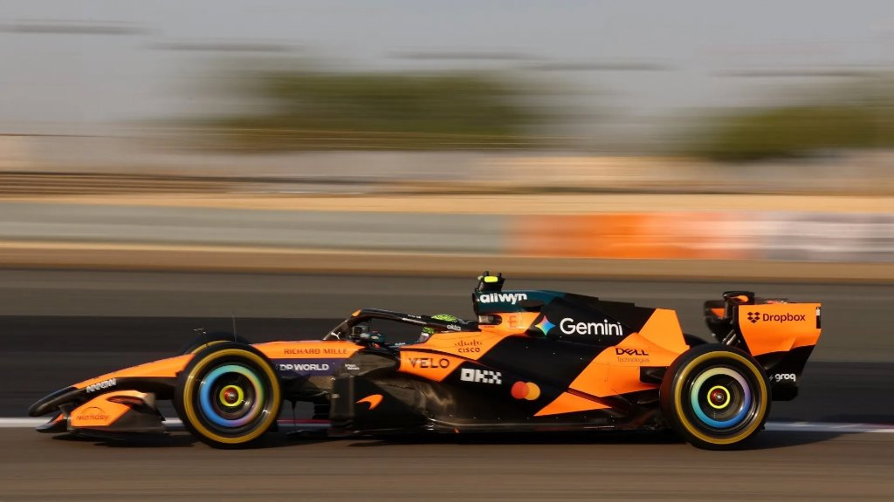

Formula 1 Strategy Explained
Modern Grand Prix racing is an optimization battle fought with tire grip curves, pit-lane transit losses, and clean track position.

Soft, Medium & Hard
Pirelli brings three dry compounds to every race. Soft offers the fastest single-lap pace, Medium balances durability and speed, and Hard runs deep into one-stop strategies. Under FIA rules, dry races mandate using at least two different compounds.
Non-Linear Degradation
Rubber wears gently at first, then hits a cliff where rubber temperature and grain collapse—costing over a second per lap in seconds. Predicting that cliff before your rivals do defines every undercut.
Pit Window Tactics
Pitting a lap early onto fresh rubber lets you leapfrog ahead while a rival loses time on old tires (the undercut). Staying out when your car is light on fuel and track ahead is empty builds gap before pitting (the overcut).
Mass & Balance Effect
Cars launch carrying roughly 105 kg of fuel and burn around 1.7 kg per lap. Every ten laps sheds massive weight, naturally speeding up late-race pace by roughly 0.3 seconds per ten laps even as tires age.